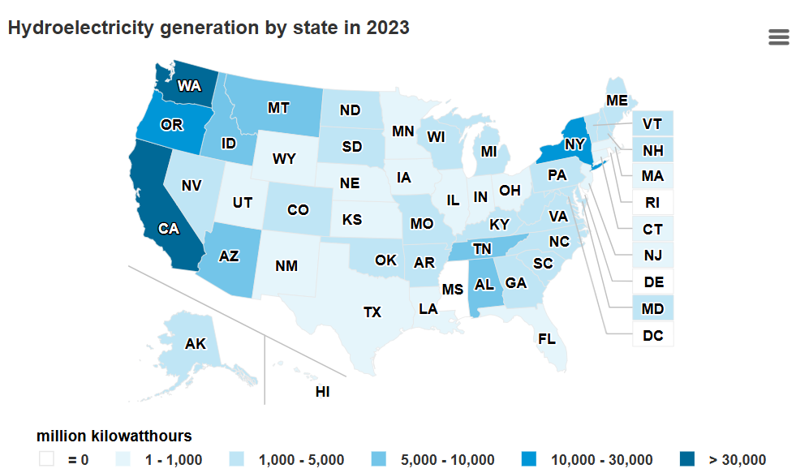

What is Hydroelectricty
Hydroelectric power is a form of renewable energy that generates electricity by utilizing the kinetic energy of flowing or falling water. This process typically involves a dam or a water reservoir that captures water from rivers. As water flows through turbines, it spins them, converting the water's energy into mechanical energy, which is then transformed into electrical energy through generators. Hydroelectric power is considered a clean energy source because it produces little to no greenhouse gas emissions compared to fossil fuels.
How Does Moving Water Get Turned Into Electricity
The dam is positioned on a downhill source of flowing water where they use a turbine to take advantage of the flowing water to spin the turbine and send the generated electricity through a power grid to be used as needed. The water flows from the penstock to the turbine and then to the outside outlet so that it can keep flowing
Advantages/Disadvantages of Hydroelectricty
| Advantage | Disadvantage |
|---|---|
| Hydropower provides flood control | Can harm/alter natural habitats around it |
| Hydropower provides low carbon footprint | Changing water cycles can effect power output |
| Hydropower is flexible and quick to power | Disputes over water rights are slowing dam production |
Best places in the U.S that use Hydroelectricty!
- Grand Coulee dam-Washington
- Hoover dam- Nevada,
- Bath County pumped storage station- Virginia
Can anything be done to use the power of moving water to create electricity?
Yes, energy from moving water can be used to create electricity in several different ways a hydroelectric dam, wave power, or tidal power. Hydroelectric dams take energy from moving rivers. The dam controls the flow of water and the amount of electricity that is produced. Dams create large bodies of calm water (or reservoirs) behind them. These bodies of water can be used for recreation, wildlife sanctuaries, or even sources of drinking water. Wave power takes energy from waves on the surface of the ocean using technology like a special buoy or other floating device. Tidal power takes energy from flowing waters with the help of turbines as tides rush in and out of coastal areas.